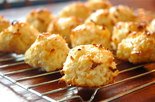

Prep time: 10 min. Bake: 20 min. Makes: 1 1/2 dozen
"THESE COOKIES earned me a first-place ribbon at the county fair. They remain my family's favourites - they never last long at my house!" - Anna, Ottawa
1 macaroon: 108 calories, 5 g fat (4 g saturated fat), 0 cholesterol, 81 mg sodium, 15 g carbohydrate, 1 g fiber, 1 g protein. Diabetic Exchanges: 1 starch, 1 fat.
Sign up here for our FREE Recipe of the Day newsletter!
Source: "First Place Coconut Macaroons"